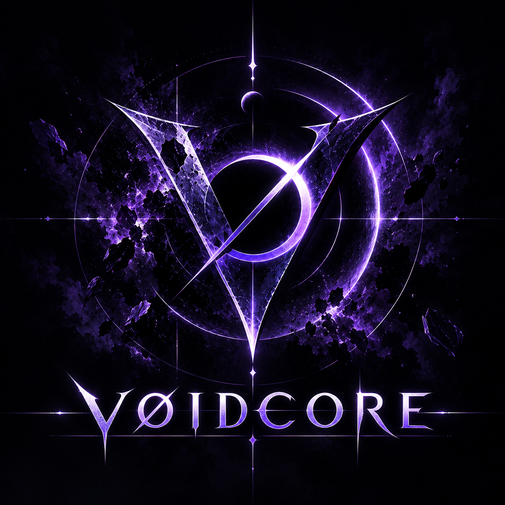
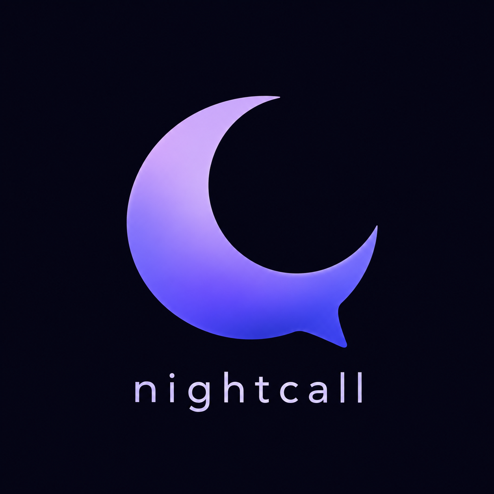

VØIDCORE
Em desenvolvimentoHub de ferramentas para FPS com recursos para CS2, Valorant e Rainbow Six Siege.
Ver projetoConstruindo minhas ideias, uma por uma.

Hub de ferramentas para FPS com recursos para CS2, Valorant e Rainbow Six Siege.
Ver projeto
Plataforma social focada em conversas, mensagens e chamadas em tempo real.
Trabalhando na experiência de mensagens, chamadas, compartilhamento de tela e na organização geral da interface.
Evoluindo as ferramentas para FPS, incluindo sensibilidade, crosshair e recursos específicos para diferentes jogos.
Reorganizando o site para representar melhor meus projetos atuais sem abandonar a identidade original.
Victor, também conhecido como GojoDark.
Transformo ideias em projetos digitais, ferramentas, interfaces, mods e experiências voltadas principalmente para jogos.
Não sigo uma área única. Se uma ideia parece interessante, útil ou simplesmente divertida de construir, provavelmente vou tentar fazer ela funcionar.